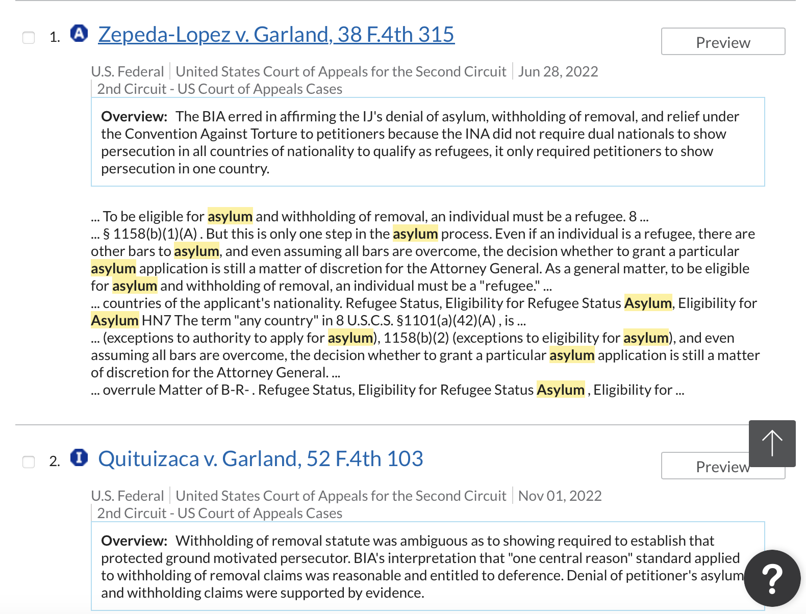
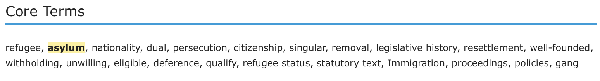

I scraped over 600 asylum cases heard in the 2nd Circuit on Lexis Nexis from Jan. 1, 2020 to present.

With the results from scraping, I then used Regular Expression (Regex) to detect whether cases were granted or denied,
the petitioners' countries of origin, and core terms seen in the judges' opinion.

This is an ongoing project that will be visualized
on a map by asylum approval rate and countries of origin.
Check more details of my code
here